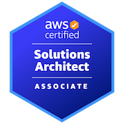

Skills:
Java // C++
Software Design
AWS Cloud Architecture
DevOps
Certifications:


Education:
Amazon Technical Academy
Software Engineering
2022 - Present
New Jersey Institute of Technology
Computer Engineering
2019 - 2022
Work Experience:
Amazon Corporate
- Amazon Technical Academy Participant (Remote): September 2022 - Present
Amazon Fulfillment
- Process Assistant (EWR7): Febuary 2022 - August 2022
- Learning Ambassador (DJZ5): October 2021 - January 2022
- Sortation Associate (DJZ5): June 2021 - September 2021
BioReference
- Covid Specimen Processor: Summer 2020